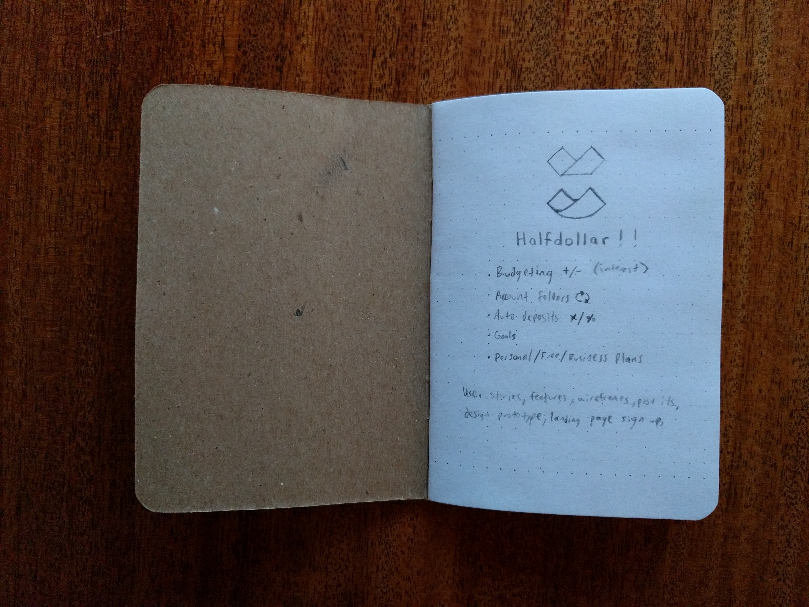
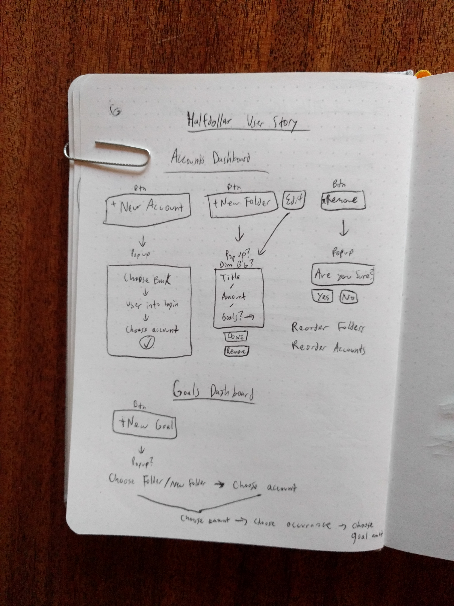

Derek Mark Torsani


Halfdollar was born out of the need to better manage my sources of income and expenses. After being overwhelmed with other personal budgeting tools I decided to create my own. After about a year of thinking through the problem and exploring different solutions through talking with potential users, I began designing and building the alpha. With the help of a couple friends, I launched the first bare bones version of Halfdollar to some friends and email subscribers.
The functionality of this first version was very basic, only manually adding income sources and expenses. There was some simple math to help you see clearly what you were making, spending, and what was leftover each month. I did some user research by sending out a Typeform survey to the couple handfuls of people using it so far. Based on their feedback we stripped out some complexities in organizing transactions and simplified the core of the product.
In early 2017, I put together a few blog posts about my process and what Halfdollar was, created a fun promotional video, and launched on Product Hunt. We received over 300 users onto the free platform the first day. I was completely humbled and interested to find out more about what these people were looking for in a personal budgeting tool. Overhwelmingly, I managed to support any users writing in about feature requests and any help they might have needed on my own.
It was clear that people enjoyed the simplicity of the product, but wanted more functionality. So I sent out another survey to the current user base to find out what features they wanted, what features they would pay for, how much they would pay for them, what budgeting tools they had used before, and if they would recommend Halfdollar to a friend.
This research helped me understand how to move this product forward. We focused on rebuilding Halfdollar to better handle scalability for elaborate features, such as connecting accounts and automatically sorting transactions, more custom organization, sharing budgets, search, and historical tracking. Testing and research has also helped to make decisions on how information is communicated on the marketing side of things.
Internally, we have gone through a variety of design concepts for users accounts based around what information should be displayed initially, and how to guide them through the tool to find the data they need in the most clear and seamless ways possible. I personally handle the design and front-end development work, as well as a lot of the admin stuff while my partner focuses on the technical back-end of the product.
This ongoing project has been a great way to understand many roles that go into keeping a digital product alive and well. Sometimes things get difficult to maintain or solve, but I've found that the most important thing is communicating honestly to our users, and communicate clearly and often to everyone working on it together.
 


derektorsani (at) gmail (dot) com
@dmtors